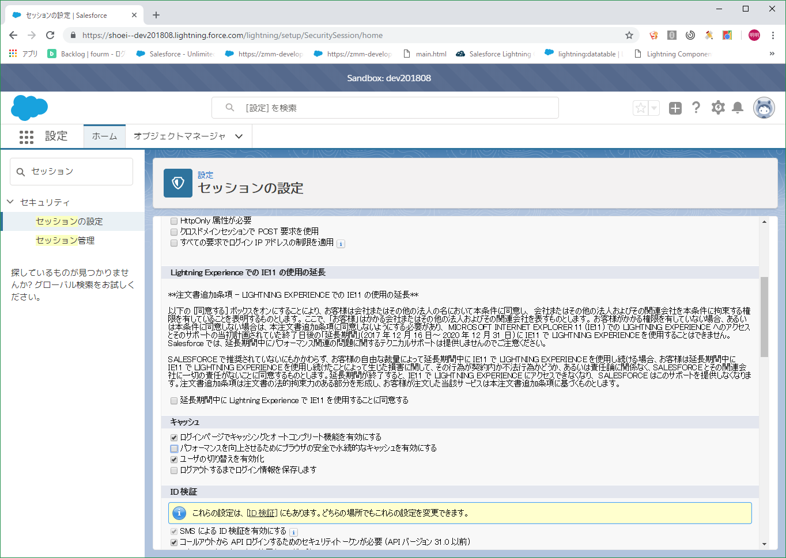

Map
collaborationGroupOwnerMap = new Map
([SELECT Id, IsActive FROM User WHERE Id IN :updateGroupMap.values()]);
Schema.DescribeSObjectResult a_desc = Opportunity.sObjectType.getDescribe(); //for the Account object, you can replace that with any object you have, standard or custom Map<String, Schema.SObjectField> a_fields = a_desc.fields.getMap(); VisualEditor.DynamicPickListRows myValues = new VisualEditor.DynamicPickListRows(); for(Schema.sObjectField fld:a_fields.values()){ SObjectType objToken = Schema.getGlobalDescribe().get('Account'); DescribeSObjectResult objDef = objToken.getDescribe(); Map<String, SObjectField> fields = objDef.fields.getMap(); Set<String> fieldSet = fields.keySet(); for(String s:fieldSet) { SObjectField fieldToken = fields.get(s); DescribeFieldResult selectedField = fieldToken.getDescribe(); System.debug(selectedField.getName()); }
Salesforce Sites:
https://help.salesforce.com/articleView?id=sites_overview.htm&type=5
